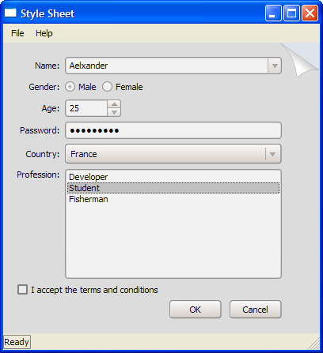

| Home · All Classes · Main Classes · Grouped Classes · Modules · Functions |
Qt Style Sheets are a powerful mechanism that allows you to customize the appearance of widgets, in addition to what is already possible by subclassing QStyle. The concepts, terminology, and syntax of Qt Style Sheets are heavily inspired by HTML Cascading Style Sheets (CSS) but adapted to the world of widgets.
Topics:
Styles sheets are textual specifications that can be set on the whole application using QApplication::setStyleSheet() or on a specific widget (and its children) using QWidget::setStyleSheet(). If several style sheets are set at different levels, Qt derives the effective style sheet from all of those that are set. This is called cascading.
For example, the following style sheet specifies that all QLineEdits should use yellow as their background color, and all QCheckBoxes should use red as the text color:
QLineEdit { background: yellow }
QCheckBox { color: red }
For this kind of customization, style sheets are much more powerful than QPalette. For example, it might be tempting to set the QPalette::Button role to red for a QPushButton to obtain a red push button. However, this wasn't guaranteed to work for all styles, because style authors are restricted by the different platforms' guidelines and (on Windows XP and Mac OS X) by the native theme engine.
Style sheets let you perform all kinds of customizations that are difficult or impossible to perform using QPalette alone. If you want yellow backgrounds for mandatory fields, red text for potentially destructive push buttons, or fancy check boxes, style sheets are the answer.
Style sheets are applied on top of the current widget style, meaning that your applications will still look native, but any style sheet constraints will be taken into consideration. Unlike palette fiddling, style sheets offer guarantees: If you set the background color of a QPushButton to be red, you can be assured that the button will have a red background in all styles, on all platforms. Qt Designer provides style sheet integration, making it easy to view the effects of a style sheet in different widget styles.
In addition, style sheets can be used to provide a distinctive look and feel for your application, without having to subclass QStyle. For example, you can specify arbitrary images for radio buttons and check boxes to make them stand out. Using this technique, you can also achieve minor customizations that would normally require subclassing several style classes, such as specifying a style hint. The Style Sheet example depicted below defines two distinctive style sheets that you can try out and modify at will.
 |  |
When a style sheet is active, the QStyle returned by QWidget::style() is a wrapper "style sheet" style, not the platform-specific style. The wrapper style ensures that any active style sheet is respected and otherwise forwards the drawing operations to the underlying, platform-specific style (e.g., QWindowsXPStyle on Windows XP).
Warning: Qt style sheets are currently not supported for QMacStyle (the default style on Mac OS X). We plan to address this in Qt 4.3.
Qt Style Sheet terminology and syntactic rules are almost identical to those of HTML CSS. If you already know CSS, you can probably skim quickly through this section.
Style sheets consist of a sequence of style rules. A style rule is made up of a selector and a declaration. The selector specifies which widgets are affected by the rule; the declaration specifies which attributes should be set on the widget. For example:
QPushButton { color: red }
In the above style rule, QPushButton is the selector and { color: red } is the declaration. The rule specifies that QPushButton and its subclasses (e.g., MyPushButton) should use red as their foreground color.
Qt Style Sheet is generally case insensitive (i.e., color, Color, COLOR, and cOloR refer to the same attribute). The only exceptions are class names, object names, and Qt property names, which are case sensitive.
Several selectors can be specified for the same declaration, using commas (,) to separate the selectors. For example, the rule
QPushButton, QLineEdit, QComboBox { color: red }
is equivalent to this sequence of three rules:
QPushButton { color: red }
QLineEdit { color: red }
QComboBox { color: red }
The declaration part of a style rule is a list of attribute: value pairs, enclosed in braces ({}) and separated with semicolons. For example:
QPushButton { color: red; background-color: white }
See the List of Attributes section below for the list of attributes provided by Qt widgets.
All the examples so far used the simplest type of selector, the Type Selector. Qt Style Sheets support all the selectors defined in CSS2. The table below summarizes the most useful types of selectors.
| Selector | Example | Explanation |
|---|---|---|
| Universal Selector | * | Matches all widgets. |
| Type Selector | QPushButton | Matches instances of QPushButton and of its subclasses. |
| Attribute Selector | QPushButton[flat="false"] | Matches instances of QPushButton that are not flat. You may use this selector to test for any Qt property specified using Q_PROPERTY(). In addition, the special class property is supported, for the name of the class. Instead of =, you can also use ~= to test whether a QStringList property contains a given QString. Warning: If the value of the property changes after the style sheet has been set, it might be necessary to force a style sheet recomputation. One way to achieve this is to unset the style sheet and set it again. |
| Class Selector | .QPushButton | Matches instances of QPushButton, but not of its subclasses. This is equivalent to *[class~="QPushButton"]. |
| ID Selector | QPushButton#okButton | Matches all QPushButton instances whose object name is okButton. |
| Descendant Selector | QDialog QPushButton | Matches all instances of QPushButton that are descendants (children, grandchildren, etc.) of a QDialog. |
| Child Selector | QDialog > QPushButton | Matches all instances of QPushButton that are direct children of a QDialog. |
For styling complex widgets, it is necessary to access sub-controls of the widget, such as the drop-down button of a QComboBox or the up and down arrows of a QSpinBox. Selectors may contain sub-controls that make it possible to restrict the application of a rule to specific widget sub-controls. For example:
QComboBox::drop-down { image: url(dropdown.png) }
The above rule styles the drop-down button of all QComboBoxes. Although the double-colon (::) syntax is reminiscent of CSS3 Pseudo-Elements, Qt Sub-Controls differ conceptually from these and have different cascading semantics.
When customizing a sub-control, we can either specify an image (using the image attribute) or set the width and weight attributes. Otherwise, they are treated the same as widgets and can be styled using the the box model.
See the List of Sub-Controls below for a list of supported sub-controls, and Customizing the QPushButton's Menu Indicator Sub-Control for a realistic example.
Selectors may contain pseudo-states that denote that restrict the application of the rule based on the widget's state. Pseudo-states appear at the end of the selector, with a colon (:) in between. For example, the following rule applies when the mouse hovers over a QPushButton:
QPushButton:hover { color: white }
Pseudo-states can be chained, in which case a logical AND is implied. For example, the following rule applies to when the mouse hovers over a checked QCheckBox:
QCheckBox:hover:checked { color: white }
If needed, logical OR can be expressed using the comma operator:
QCheckBox:hover, QCheckBox::checked { color: white }
Pseudo-states can appear in combination with sub-controls. For example:
QComboBox::drop-down:hover { image: url(dropdown_bright.png) }
See the List of Pseudo-States section below for the list of pseudo-states provided by Qt widgets.
Conflicts arise when several style rules specify the same attributes with different values. Consider the following style sheet:
QPushButton#okButton { color: gray }
QPushButton { color: red }
Both rules match QPushButton instances called okButton and there is a conflict for the color attribute. To resolve this conflict, we must take into account the specificity of the selectors. In the above example, QPushButton#okButton is considered more specific than QPushButton, because it (usually) refers to a single object, not to all instances of a class.
Similarly, selectors with pseudo-states are more specific that ones that do not specify pseudo-states. Thus, the following style sheet specifies that a QPushButton should have white text when the mouse is hovering over it, otherwise red text:
QPushButton:hover { color: white }
QPushButton { color: red }
Here's a tricky one:
QPushButton:hover { color: white }
QPushButton:enabled { color: red }
Here, both selectors have the same specificity, so if the mouse hovers over the button while it is enabled, the second rule takes precedence. If we want the text to be white in that case, we can reorder the rules like this:
QPushButton:enabled { color: red }
QPushButton:hover { color: white }
Alternatively, we can make the first rule more specific:
QPushButton:hover:enabled { color: white }
QPushButton:enabled { color: red }
A similar issue arises in conjunction with Type Selectors. Consider the following example:
QPushButton { color: red }
QAbstractButton { color: gray }
Both rules apply to QPushButton instances (since QPushButton inherits QAbstractButton) and there is a conflict for the color attribute. Because QPushButton inherits QAbstractButton, it might be tempting to assume that QPushButton is more specific than QAbstractButton. However, for style sheet computations, all Type Selectors have the same specificity, and the rule that appears last takes precedence. In other words, color is set to gray for all QAbstractButtons, including QPushButtons. If we really want QPushButtons to have red text, we can always reorder the rules.
For determining the specificity of a rule, Qt Style Sheets follow the CSS2 Specification:
A selector's specificity is calculated as follows:
- count the number of ID attributes in the selector (= a)
- count the number of other attributes and pseudo-classes in the selector (= b)
- count the number of element names in the selector (= c)
- ignore pseudo-elements [i.e., sub-controls].
Concatenating the three numbers a-b-c (in a number system with a large base) gives the specificity.
Some examples:
* {} /* a=0 b=0 c=0 -> specificity = 0 */ LI {} /* a=0 b=0 c=1 -> specificity = 1 */ UL LI {} /* a=0 b=0 c=2 -> specificity = 2 */ UL OL+LI {} /* a=0 b=0 c=3 -> specificity = 3 */ H1 + *[REL=up]{} /* a=0 b=1 c=1 -> specificity = 11 */ UL OL LI.red {} /* a=0 b=1 c=3 -> specificity = 13 */ LI.red.level {} /* a=0 b=2 c=1 -> specificity = 21 */ #x34y {} /* a=1 b=0 c=0 -> specificity = 100 */
Style sheets can be set on the QApplication, on parent widgets, and on child widgets. An arbitrary widget's effective style sheet is obtained by merging the style sheets set on the widget's ancestors (parent, grandparent, etc.), as well as any style sheet set on the QApplication.
When conflicts arise, the widget's own style sheet is always preferred to any inherited style sheet, irrespective of the specificity of the conflicting rules. Likewise, the parent widget's style sheet is preferred to the grandparent's, etc.
One consequence of this is that setting a style rule on a widget automatically gives it precedence over other rules specified in the ancestor widgets' style sheets or the QApplication style sheet. Consider the following example. First, we set a style sheet on the QApplication:
qApp->setStyleSheet("QPushButton { color: white }");
Then we set a style sheet on a QPushButton object:
myPushButton->setStyleSheet("* { color: blue }");
The style sheet on the QPushButton forces the QPushButton (and any child widget) to have blue text, in spite of the more specific rule set provided by the application-wide style sheet.
The result would have been the same if we had written
myPushButton->setStyleSheet("color: blue");
except that if the QPushButton had children (which is unlikely), the style sheet would have no impact on them.
Style sheet cascading is a complex topic. Refer to the CSS2 Specification for the gory details. Be aware that Qt currently doesn't implement !important.
Qt Style Sheets support various attributes, pseudo-states, and sub-controls that make it possible to customize the look of widgets.
The following table lists the Qt widgets that can be customized using style sheets:
| Widget | How to Style |
|---|---|
| QCheckBox | Supports the box model. The check indicator can be styled using the ::indicator sub-control. The spacing attribute specifies the spacing between the check indicator and the text. |
| QComboBox | The frame around the combobox can be styled using the box model. The drop-down button can be styled using the ::drop-down sub-control. The arrow mark inside the drop-down button can be styled using the ::down-arrow sub-control. |
| QDialogButtonBox | The layout of buttons can be altered using the button-layout attribute. |
| QFrame | Supports the box model. Does not support the :hover pseudo-state. |
| QGroupBox | Supports the box model. The title can be styled using the ::title sub-control. The indicator of checkable group boxes can be styled using the ::indicator sub-control. |
| QLabel | Supports the box model. Does not support the :hover pseudo-state. |
| QLineEdit | Support the box model. |
| QListView | Supports the box model. The selection behavior is controlled by the #show-decoration-selected-attr attribute. |
| QMenu | Supports the box model. Individual items are styled using the ::item sub-control. |
| QMenuBar | Supports the box model. The spacing attribute specifies the spacing between menu items. Individual items are styled using the ::item sub-control. |
| QMessageBox | The messagebox-text-interaction-flags attribute can be used to alter the interaction with text in the message box. |
| QPushButton | Supports the box model. The menu indicator is styled using the ::menu-indicator sub-control. Appearance of checkable push buttons can be customized using the :on and :off pseudo-states. |
| QRadioButton | Supports the box model. The radio indicator can be styled using the {#indicator-sub}{::indicator} sub-control. The spacing attribute controls the spacing between the radio indicator and the text. |
| QSizeGrip | Supports the width, height, and image attributes. |
| QSpinBox | The frame of the spin box can be styled using the box model. The up button and arrow can be styled using the ::up-button and ::up-arrow sub-controls. The down button and arrow are styled using the ::down-button and ::down-arrow sub-controls. |
| QSplitter | Supports the box model and the image attribute. |
| QStatusBar | The frame for individual items can be style using the item sub-control. |
| QTableView | Supports the box model. The color of the grid can be specified using the gridline-color attribute. |
| QTextEdit | Supports the box model. |
| QToolTip | Supports the box model. The opacity attribute controls the opacity of the tooltip. |
| QTreeView | Supports the box model. |
| QWidget | Supports only the background and background-origin attributes. |
The table below lists all the attributes supported by Qt Style Sheets. Which values can be given to an attribute depend on the attribute's type. Unless otherwise specified, attributes below apply to all widgets. Attributes marked with an asterisk (*) are specific to Qt and have no equivalent in CSS2 or CSS3.
| Attribute | Type | Description |
|---|---|---|
| alternate-background | Color | The alternate background color used in QAbstractItemView subclasses. If this attribute is not set, the default value is whatever is set for the palette's AlternateBase role. Example: QTreeView {
alternate-background: blue;
background: yellow;
}
See also background and selection-background-color. |
| background | Background | Shorthand notation for setting the background. Equivalent to specifying background-color, background-image, background-repeat, and/or background-position. This attribute is supported by QAbstractItemView subclasses, QAbstractSpinBox subclasses, QCheckBox, QComboBox, QDialog, QFrame, QGroupBox, QLabel, QLineEdit, QMenu, QMenuBar, QPushButton, QRadioButton, QSplitter, QTextEdit, QToolTip, and plain QWidgets. For QFrame and its subclasses, you must set the QFrame::frameStyle property to QFrame::StyledPanel; otherwise, the background attribute will not be respected. QAbstractItemView, QLineEdit, QMenu, QMenuBar, and QTextEdit don't support background images. Example: QTextEdit { background: yellow }
See also background-origin, selection-background-color, and alternate-background. |
| background-color | Color | The background color used for the widget. Examples: QLabel { background-color: yellow }
QLineEdit { background-color: rgb(255, 0, 0) }
|
| background-image | Url | The background image used for the widget. Semi-transparent parts of the image let the background-color shine through. Example: QFrame { background-image: url(:/images/hydro.png) }
|
| background-repeat | Repeat | Whether and how the background image is repeated to fill the background-origin rectangle. If this attribute is not specified, the background image is repeated in both directions (repeat). Example: QFrame {
background: white url(:/images/ring.png);
background-repeat: repeat-y;
background-position: left;
}
|
| background-position | Alignment | The alignment of the background image within the background-origin rectangle. If this attribute is not specified, the alignment is top left. Example: QFrame {
background: url(:/images/footer.png);
background-position: bottom left;
}
|
| background-origin | Origin | The widget's background rectangle, to use in conjunction with background-position and background-image. This attribute is supported by QAbstractItemView subclasses, QAbstractSpinBox subclasses, QCheckBox, QComboBox, QDialog, QFrame, QGroupBox, QLabel, QPushButton, QRadioButton, QSplitter, QTextEdit, QToolTip, and plain QWidgets. If this attribute is not specified, the default is padding. Example: QFrame {
background-image: url(:/images/header.png);
background-position: top left;
background-origin: content;
}
See also background and The Box Model. |
| border | Border | Shorthand notation for setting the widget's border. Equivalent to specifying border-color, border-style, and/or border-width. This attribute is supported by QAbstractItemView subclasses, QAbstractSpinBox subclasses, QCheckBox, QComboBox, QDialog, QFrame, QGroupBox, QLabel, QLineEdit, QMenu, QMenuBar, QPushButton, QRadioButton, QSplitter, QTextEdit, QToolTip, and plain QWidgets. Example: QLineEdit { border: 1px solid white }
|
| border-top | Border | Shorthand notation for setting the widget's top border. Equivalent to specifying border-top-color, border-top-style, and/or border-top-width. |
| border-right | Border | Shorthand notation for setting the widget's right border. Equivalent to specifying border-right-color, border-right-style, and/or border-right-width. |
| border-bottom | Border | Shorthand notation for setting the widget's bottom border. Equivalent to specifying border-bottom-color, border-bottom-style, and/or border-bottom-width. |
| border-left | Border | Shorthand notation for setting the widget's left border. Equivalent to specifying border-left-color, border-left-style, and/or border-left-width. |
| border-color | Box Colors | The color of all the border's edges. Equivalent to specifying border-top-color, border-right-color, border-bottom-color, and border-left-color. This attribute is supported by QAbstractItemView subclasses, QAbstractSpinBox subclasses, QCheckBox, QComboBox, QDialog, QFrame, QGroupBox, QLabel, QLineEdit, QMenu, QMenuBar, QPushButton, QRadioButton, QSplitter, QTextEdit, QToolTip, and plain QWidgets. If this attribute is not specified, it defaults to color (i.e., the widget's foreground color). Example: QLineEdit {
border-width: 1px;
border-style: solid;
border-color: white;
}
See also border-style, border-width, border-image, and The Box Model. |
| border-top-color | Color | The color of the border's top edge. |
| border-right-color | Color | The color of the border's right edge. |
| border-bottom-color | Color | The color of the border's bottom edge. |
| border-left-color | Color | The color of the border's left edge. |
| border-image | Border Image | The image used to fill the border. The image is cut into nine parts and stretched appropriately if necessary. See Border Image for details. This attribute is supported by QAbstractItemView subclasses, QAbstractSpinBox subclasses, QCheckBox, QComboBox, QDialog, QFrame, QGroupBox, QLabel, QLineEdit, QMenu, QMenuBar, QPushButton, QRadioButton, QSplitter, QTextEdit, QToolTip, and plain QWidgets. See also border-color, border-style, border-width, and The Box Model. |
| border-radius | Radius | The radius of the border's corners. Equivalent to specifying border-top-left-radius, border-top-right-radius, border-bottom-right-radius, and border-bottom-left-radius. This attribute is supported by QAbstractItemView subclasses, QAbstractSpinBox subclasses, QCheckBox, QComboBox, QFrame, QGroupBox, QLabel, QLineEdit, QMenu, QMenuBar, QPushButton, QRadioButton, QSplitter, QTextEdit, and QToolTip. If this attribute is not specified, it defaults to 0. Example: QLineEdit {
border-width: 1px;
border-style: solid;
border-radius: 4px;
}
See also border-width and The Box Model. |
| border-top-left-radius | Radius | The radius of the border's top-left corner. |
| border-top-right-radius | Radius | The radius of the border's top-right corner. |
| border-bottom-right-radius | Radius | The radius of the border's bottom-right corner. Setting this attribute to a positive value results in a rounded corner. |
| border-bottom-left-radius | Radius | The radius of the border's bottom-left corner. Setting this attribute to a positive value results in a rounded corner. |
| border-style | Border Style | The style of all the border's edges. This attribute is supported by QAbstractItemView subclasses, QAbstractSpinBox subclasses, QCheckBox, QComboBox, QFrame, QGroupBox, QLabel, QLineEdit, QMenu, QMenuBar, QPushButton, QRadioButton, QSplitter, QTextEdit, and QToolTip. If this attribute is not specified, it defaults to none. Example: QLineEdit {
border-width: 1px;
border-style: solid;
border-color: blue;
}
See also border-color, border-style, border-image, and The Box Model. |
| border-top-style | Border Style | The style of the border's top edge. |
| border-right-style | Border Style | The style of the border's right edge/ |
| border-bottom-style | Border Style | The style of the border's bottom edge. |
| border-left-style | Border Style | The style of the border's left edge. |
| border-width | Box Lengths | The width of the border. Equivalent to setting border-top-width, border-right-width, border-bottom-width, and border-left-width. This attribute is supported by QAbstractItemView subclasses, QAbstractSpinBox subclasses, QCheckBox, QComboBox, QFrame, QGroupBox, QLabel, QLineEdit, QMenu, QMenuBar, QPushButton, QRadioButton, QSplitter, QTextEdit, and QToolTip. Example: QLineEdit {
border-width: 2px;
border-style: solid;
border-color: darkblue;
}
See also border-color, border-radius, border-style, border-image, and The Box Model. |
| border-top-width | Length | The width of the border's top edge. |
| border-right-width | Length | The width of the border's right edge. |
| border-bottom-width | Length | The width of the border's bottom edge. |
| border-left-width | Length | The width of the border's left edge. |
| bottom | Length | If position is relative (the default), moves a sub-control by a certain offset up; specifying bottom: y is then equivalent to specifying top: -y. If position is absolute, the bottom attribute specifies the sub-control's bottom edge in relation to the parent's bottom edge (see also subcontrol-origin). Example: QSpinBox::down-button { bottom: 2px }
|
| button-layout* | Number | The layout of buttons in a QDialogButtonBox or a QMessageBox. The possible values are 0 (WinLayout), 1 (MacLayout), 2 (KdeLayout), and 3 (GnomeLayout). If this attribute is not specified, it defaults to the value specified by the current style for the SH_DialogButtonLayout style hint. Example: * { button-layout: 2px }
|
| color | Color | The color used to render text. This attribute is supported by all widgets that respect the QWidget::palette. If this attribute is not set, the default is whatever is set for in the widget's palette for the QWidget::foregroundRole (typically black). Example: QPushButton { color: red }
See also background and selection-color. |
| etch-disabled-text* | Boolean | Whether disabled text is drawn etched. If this attribute is not specified, it defaults to the value specified by the current style for the SH_EtchDisabledText style hint. Example: * { etch-disabled-text: 1px }
|
| font | Font | Shorthand notation for setting the text's font. Equivalent to specifying font-family, font-size, font-style, and/or font-weight. This attribute is supported by all widgets that respect the QWidget::font. If this attribute is not set, the default is the QWidget::font. Example: QCheckBox { font: bold italic large "Times New Roman" }
|
| font-family | String | The font family. Example: QCheckBox { font-family: "New Century Schoolbook" }
|
| font-size | Font Size | The font size. Example: QTextEdit { font-size: 12px }
|
| font-style | Font Style | The font style. Example: QTextEdit { font-style: italic }
|
| font-weight | Font Weight | The weight of the font. |
| gridline-color* | Color | The color of the grid line in a QTableView. If this attribute is not specified, it defaults to the value specified by the current style for the SH_Table_GridLineColor style hint. Example: * { gridline-color: gray }
|
| height | Length | The height of a sub-control. If this attribute is not specified, it defaults to a value that depends on the sub-control and on the current style. Example: QSpinBox::down-button { height: 10px }
See also width. |
| image* | Url | The image that is drawn at the center of a sub-control. Example: QSpinBox::down-button { image: url(:/images/spindown.png) }
|
| left | Length | If position is relative (the default), moves a sub-control by a certain offset to the right. If position is absolute, the left attribute specifies the sub-control's left edge in relation to the parent's left edge (see also subcontrol-origin). If this attribute is not specified, it defaults to 0. Example: QSpinBox::down-button { left: 2px }
|
| lineedit-password- character* | Number | The QLineEdit password character as a Unicode number. If this attribute is not specified, it defaults to the value specified by the current style for the SH_LineEdit_PasswordCharacter style hint. Example: * { lineedit-password-character: 9679 }
|
| margin | Box Lengths | The widget's margins. Equivalent to specifying margin-top, margin-right, margin-bottom, and margin-left. This attribute is supported by QAbstractItemView subclasses, QAbstractSpinBox subclasses, QCheckBox, QComboBox, QFrame, QGroupBox, QLabel, QLineEdit, QMenu, QMenuBar, QPushButton, QRadioButton, QSplitter, QTextEdit, and QToolTip. If this attribute is not specified, it defaults to 0. Example: QLineEdit { margin: 2px }
See also padding, spacing, and The Box Model. |
| margin-top | Length | The widget's top margin. |
| margin-right | Length | The widget's right margin. |
| margin-bottom | Length | The widget's bottom margin. |
| margin-left | Length | The widget's left margin. |
| messagebox-text- interaction-flags* | Number | The interaction behavior for text in a message box. Possible values are based on Qt::TextInteractionFlags. If this attribute is not specified, it defaults to the value specified by the current style for the SH_MessageBox_TextInteractionFlags style hint. Example: QMessageBox { messagebox-text-interaction-flags: 5 }
|
| min-height | Length | The widget's minimum height. This attribute is supported by QAbstractItemView subclasses, QAbstractSpinBox subclasses, QCheckBox, QComboBox, QFrame, QGroupBox, QLabel, QLineEdit, QMenu, QMenuBar, QPushButton, QRadioButton, QSizeGrip, QSpinBox, QSplitter, QStatusBar, QTextEdit, and QToolTip. If this attribute is not specified, the minimum height is derived based on the widget's contents and the style. Example: QComboBox { min-height: 24px }
See also min-width. |
| min-width | Length | The widget's minimum width. This attribute is supported by QAbstractItemView subclasses, QAbstractSpinBox subclasses, QCheckBox, QComboBox, QFrame, QGroupBox, QLabel, QLineEdit, QMenu, QMenuBar, QPushButton, QRadioButton, QSizeGrip, QSpinBox, QSplitter, QStatusBar, QTextEdit, and QToolTip. If this attribute is not specified, the minimum width is derived based on the widget's contents and the style. Example: QComboBox { min-width: 72px }
See also min-height. |
| opacity* | Number | The opacity for a widget. Possible values are from 0 (transparent) to 255 (opaque). For the moment, this is only supported for tooltips. If this attribute is not specified, it defaults to the value specified by the current style for the SH_ToolTipLabel_Opacity style hint. Example: QToolTip { opacity: 223 }
|
| padding | Box Lengths | The widget's padding. Equivalent to specifying padding-top, padding-right, padding-bottom, and padding-left. This attribute is supported by QAbstractItemView subclasses, QAbstractSpinBox subclasses, QCheckBox, QComboBox, QFrame, QGroupBox, QLabel, QLineEdit, QMenu, QMenuBar, QPushButton, QRadioButton, QSplitter, QTextEdit, and QToolTip. If this attribute is not specified, it defaults to 0. Example: QLineEdit { padding: 3px }
See also margin, spacing, and The Box Model. |
| padding-top | Length | The widget's top padding. |
| padding-right | Length | The widget's right padding. |
| padding-bottom | Length | The widget's bottom padding. |
| padding-left | Length | The widget's left padding. |
| position | relative | absolute | Whether offsets specified using left, right, top, and bottom are relative or absolute coordinates. If this attribute is not specified, it defaults to relative. |
| right | Length | If position is relative (the default), moves a sub-control by a certain offset to the left; specifying right: x is then equivalent to specifying left: -x. If position is absolute, the right attribute specifies the sub-control's right edge in relation to the parent's right edge (see also subcontrol-origin). Example: QSpinBox::down-button { right: 2px }
|
| selection-background-color* | Color | The background of selected text or items. This attribute is supported by all widgets that respect the QWidget::palette and that show selection text. If this attribute is not set, the default value is whatever is set for the palette's Highlight role. Example: QTextEdit { selection-background-color: darkblue }
See also selection-color and background. |
| selection-color* | Color | The foreground of selected text or items. This attribute is supported by all widgets that respect the QWidget::palette and that show selection text. If this attribute is not set, the default value is whatever is set for the palette's HighlightedText role. Example: QTextEdit { selection-color: white }
See also selection-background-color and color. |
| show-decoration- selected* | Boolean | Controls whether selections in a QListView cover the entire row or just the extent of the text. If this attribute is not specified, it defaults to the value specified by the current style for the SH_ItemView_ShowDecorationSelected style hint. Example: * { show-decoration-selected: 1 }
|
| spacing* | Length | Internal spacing in the widget. This attribute is supported by QCheckBox, checkable QGroupBoxes, QMenuBar, and QRadioButton. If this attribute is not specified, the default value depends on the widget and on the current style. Example: QMenuBar { spacing: 10 }
|
| subcontrol-origin* | Origin | The origin rectangle of the sub-control within the parent element. If this attribute is not specified, the default is padding. Example: QSpinBox::up-button {
image: url(:/images/spinup.png);
subcontrol-origin: content;
subcontrol-position: right top;
}
See also subcontrol-position. |
| subcontrol-position* | Alignment | The alignment of the sub-control within the origin rectangle specified by subcontrol-origin. If this attribute is not specified, it defaults to a value that depends on the sub-control. Example: QSpinBox::down-button {
image: url(:/images/spindown.png);
subcontrol-origin: padding;
subcontrol-position: right bottom;
}
See also subcontrol-origin. |
| top | Length | If position is relative (the default), moves a sub-control by a certain offset down. If position is absolute, the top attribute specifies the sub-control's top edge in relation to the parent's top edge (see also subcontrol-origin). If this attribute is not specified, it defaults to 0. Example: QSpinBox::up-button { top: 2px }
|
| width | Length | The width of a sub-control. If this attribute is not specified, it defaults to a value that depends on the sub-control and on the current style. Example: QSpinBox::up-button { width: 12px }
See also height. |
The following table summarizes the syntax and meaning of the different attribute types.
| Type | Syntax | Desciption |
|---|---|---|
| Alignment | { top | bottom | left | right | center }* | Horizontal and/or vertical alignment. Example: QTextEdit { background-position: bottom center }
|
| Background | { Color | Url | Repeat | Alignment }* | A sequence of zero or more occurrences of Color, Url, Repeat, and Alignment. |
| Boolean | 0 | 1 | True (1) or false (0). Example: QDialog { etch-disabled-text: 1 }
|
| Border | { Border Style | Length | Color }* | Shorthand border attribute. |
| Border Image | none | Url Number{4} (stretch | repeat){0,2} | A border image is an image that is composed of nine parts (top left, top center, top right, center left, center, center right, bottom left, bottom center, and bottom right). When a border of a certain size is required, the corner parts are used as is, and the top, right, bottom, and left parts are stretched or repeated to produce a border with the desired size. See the CSS3 Draft Specification for details. |
| Border Style | dashed | dot-dash | dot-dot-dash | dotted | double | groove | inset | outset | ridge | solid | none | Specifies the pattern used to draw a border. See the CSS3 Draft Specification for details. |
| Box Colors | Color{1,4} | One to four occurrences of Color, specifying the top, right, bottom, and left edges of a box, respectively. If the left color is not specified, it is taken to be the same as the right color. If the bottom color is not specified, is it taken to be the same as the top color. If the right color is not specified, it is taken to be the same as the top color. Example: QLabel { border-color: red } /* red red red red */
QLabel { border-color: red blue } /* red blue red blue */
QLabel { border-color: red blue green } /* red blue green blue */
QLabel { border-color: red blue green yellow } /* red blue green yellow */
|
| Box Lengths | Length{1,4} | One to four occurrences of Length, specifying the top, right, bottom, and left edges of a box, respectively. If the left length is not specified, it is taken to be the same as the right length. If the bottom length is not specified, is it taken to be the same as the top length. If the right length is not specified, it is taken to be the same as the top length. Examples: QLabel { border-width: 1px } /* 1px 1px 1px 1px */
QLabel { border-width: 1px 2px } /* 1px 2px 1px 2px */
QLabel { border-width: 1px 2px 3px } /* 1px 2px 3px 2px */
QLabel { border-width: 1px 2px 3px 4px } /* 1px 2px 3px 4px */
|
| Color | rgb(r, g, b) | rgba(r, g, b, a) | #rrggbb | Color Name | Specifies a color as RGB (red, green, blue) or RGBA (red, green, blue, alpha). The rgb() or rgba() syntax can be used with integer values between 0 and 255, or with percentages. Examples: QLabel { border-color: red } /* opaque red */
QLabel { border-color: #FF0000 } /* opaque red */
QLabel { border-color: rgba(255, 0, 0, 75%) } /* 75% transparent red */
QLabel { border-color: rgb(255, 0, 0) } /* opaque red */
QLabel { border-color: rgb(100%, 0%, 0%) } /* opaque red */
|
| Font | (Font Style | Font Weight){0,2} Font Size String | Shorthand font attribute. |
| Font Size | xx-small | x-small | small | medium | large | x-large | xx-large | larger | smaller | Length | The size of a font. |
| Font Style | normal | italic | oblique | The style of a font. |
| Font Weight | normal | bold | 100 | 200 ... | 900 | The weight of a font. |
| Length | Number (px | em | ex)? | A number followed by a measurement unit. The supported units are:
|
| Number | A decimal integer or a real number | Examples: 0, 18, +127, -255, 12.34, -.5, 0009. |
| Origin | margin | border | padding | content | Indicates which of four rectangles to use.
See also The Box Model. |
| Radius | Length{1, 2} | One or two occurrences of Length. If only one length is specified, it is used as the radius of the quarter circle defining the corner. If two lengths are specified, the first length is the horizontal radius of a quarter ellipse, whereas the second length is the vertical radius. |
| Repeat | repeat-x | repeat-y | repeat | no-repeat | A value indicating the nature of repetition.
|
| Url | url(filename) | filename is the name of a file on the local disk or stored using the Qt Resource System. Setting an image implicitly sets the width and height of the element. |
The following pseudo-states are supported:
| Pseudo-State | Description |
|---|---|
| :checked | The button widget is checked. |
| :disabled | The widget is disabled. |
| :enabled | The widget is enabled. |
| :focus | The widget has input focus. |
| :hover | The mouse is hovering over the widget. |
| :indeterminate | The QCheckBox or QRadioButton is partially checked. |
| :off | For widgets that can be toggled, this applies to widgets in the "off" state. |
| :on | For widgets that can be toggled, this applies to widgets in the "on" state. This also applies to QComboBoxes that have their list open, and to QMenuBars that have one of their menus open. |
| :pressed | The widget is being pressed using the mouse. |
| :unchecked | The button widget is unchecked. |
The following sub-controls are available:
| Sub-Control | Description |
|---|---|
| ::down-arrow | The down arrow of a QComboBox or a QSpinBox. |
| ::down-button | The down button of a QSpinBox. |
| ::drop-down | The drop-down arrow of a QComboBox. |
| ::indicator | The indicator of a QCheckBox, a QRadioButton, or a checkable QGroupBox. |
| ::item | An item of a QMenuBar, a QMenu, or a QStatusBar. |
| ::menu-indicator | The menu indicator of a QPushButton. |
| ::title | The title of a QGroupBox. |
| ::up-arrow | The up arrow of a QSpinBox. |
| ::up-button | The up button of a QSpinBox. |
See Customizing the QPushButton's Menu Indicator Sub-Control for an example of how to customize a sub-control.
Widgets and sub-controls that support the background, border, margin, and padding attributes follow the box model. The image below illustrates how these attributes relate to each other:
The margin, border-width, and padding attributes all default to zero. In that case, all four rectangles (margin, border, padding, and content) coincide exactly.
If a background is specified for a widget, by default it is drawn only for the area inside the border. This can be changed using the background-origin attribute.
In this section, we will see examples of how to style widgets using style sheets. Qt Designer is an excellent tool to preview style sheets. Just right-click anywhere on the form you're designing and click Edit styleSheet.
Let's start by setting yellow as the background color of all QLineEdits in an application. This could be achieved like this:
qApp->setStyleSheet("QLineEdit { background-color: yellow }");
If we want the attribute to apply only to the QLineEdits that are children (or grandchildren or grand-grandchildren) of a specific dialog, we would rather do this:
myDialog->setStyleSheet("QLineEdit { background-color: yellow }");
If we want the attribute to apply only to one specific QLineEdit, we can give it a name using QObject::setObjectName() and use an ID Selector to refer to it:
myDialog->setStyleSheet("QLineEdit#nameEdit { background-color: yellow }");
Alternatively, we can set the background-color attribute directly on the QLineEdit, omitting the selector:
nameEdit->setStyleSheet("background-color: yellow");
To ensure a good contrast, we should also specify a suitable color for the text:
nameEdit->setStyleSheet("color: blue; background-color: yellow");
It might be a good idea to change the colors used for selected text as well:
nameEdit->setStyleSheet("color: blue;"
"background-color: yellow;"
"selection-color: yellow;"
"selection-background-color: blue;");
There are many situations where we need to present a form that has mandatory fields. To indicate to the user that the field is mandatory, one effective (albeit esthetically dubious) solution is to use yellow as the background color for those fields. It turns out this is very easy to implement using Qt Style Sheets. First, we would use the following application-wide style sheet:
*[mandatoryField="true"] { background-color: yellow }
This means that every widget whose mandatoryField property is set to true would have a yellow background.
Then, for each mandatory field widget, we would simply create a mandatoryField property on the fly and set it to true. For example:
QLineEdit *nameEdit = new QLineEdit(this);
nameEdit->setProperty("mandatoryField", true);
QLineEdit *emailEdit = new QLineEdit(this);
emailEdit->setProperty("mandatoryField", true);
QSpinBox *ageSpinBox = new QSpinBox(this);
ageSpinBox->setProperty("mandatoryField", true);
This time, we will show how to create a red QPushButton. This QPushButton would presumably be connected to a very destructive piece of code.
First, we are tempted to use this style sheet:
QPushButton#evilButton { background-color: red }
However, the result is a boring, flat button with no borders:

What happened is this:
Let's improve the situation by specifying a border:
QPushButton#evilButton {
background-color: red;
border-style: outset;
border-width: 2px;
border-color: beige;
}
Things look already a lot better. But the button looks a bit cramped. Let's specify some spacing between the border and the text using the padding. Additionally, we will enforce a minimum width, round the corners, and specify a larger font to make the button look nicer:
QPushButton#evilButton {
background-color: red;
border-style: outset;
border-width: 2px;
border-radius: 10px;
border-color: beige;
font: bold 14px;
min-width: 10em;
padding: 6px;
}

The only issue remaining is that the button doesn't react when we press it. We can fix this by specifying a slightly different background color and use a different border style.
QPushButton#evilButton {
background-color: red;
border-style: outset;
border-width: 2px;
border-radius: 10px;
border-color: beige;
font: bold 14px;
min-width: 10em;
padding: 6px;
}
QPushButton#evilButton:pressed {
background-color: rgb(224, 0, 0);
border-style: inset;
}
Sub-controls give access to the sub-elements of a widget. For example, a QPushButton associated with a menu (using QPushButton::setMenu()) has a menu indicator. Let's customize the menu indicator for the red push button:
QPushButton#evilButton::menu-indicator {
image: url(myindicator.png);
}
By default, the menu indicator is located at the bottom-right corner of the padding rectangle. We can change this by specifying subcontrol-position and subcontrol-origin to anchor the indicator differently. We can also use top and left to move the indicator by a few pixels. For example:
QPushButton::menu-indicator {
image: url(myindicator.png);
subcontrol-position: right center;
subcontrol-origin: padding;
left: -2px;
}
This positions the myindicator.png to the center right of the QPushButton's padding rectangle (see subcontrol-origin for more information).
Since red seems to be our favorite color, let's make the text in QLineEdit red by setting the following application-wide stylesheet:
QLineEdit { color: red }
However, we would like to give a visual indication that a QLineEdit is read-only by making it appear gray:
QLineEdit { color: red }
QLineEdit[readOnly="true"] { color: gray }
At some point, our design team comes with the requirement that all QLineEdits in the registration form (with the object name registrationDialog) to be brown:
QLineEdit { color: red }
QLineEdit[readOnly="true"] { color: gray }
#registrationDialog QLineEdit { color: brown }
A few UI design meetings later, we decide that all our QDialogs should have brown colored QLineEdits:
QLineEdit { color: red }
QLineEdit[readOnly="true"] { color: gray }
QDialog QLineEdit { color: brown }
Quiz: What happens if we have a read-only QLineEdit in a QDialog? [Hint: The Conflict Resolution section above explains what happens in cases like this.]
See also Style Sheet Example, Supported HTML Subset, and QStyle.
| Copyright © 2006 Trolltech | Trademarks | Qt 4.2.2 |